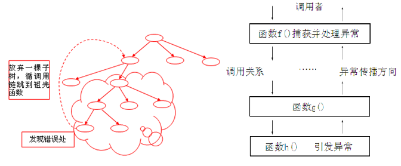

前言
之前学过C++，时间长了，有些遗忘。当时学时也有些不扎实，一直想写这个再温系列，一直没抽出时间，今天就以这个CPP中的异常开始吧。（20181225）
异常介绍
1、异常是一种程序控制机制，与函数机制独立和互补
函数是一种以栈结构展开的上下函数衔接的程序控制系统,异常是另一种控制结构,它依附于栈结构,却可以同时设置多个异常类型作为网捕条件,从而以类型匹配在栈机制中跳跃回馈.
2、异常设计目的：
栈机制是一种高度节律性控制机制,面向对象编程却要求对象之间有方向、有目的的控制传动,从一开始，异常就是冲着改变程序控制结构，以适应面向对象程序更有效地工作这个主题，而不是仅为了进行错误处理。
异常设计出来之后，却发现在错误处理方面获得了最大的好处。
异常处理的基本思想
1、C/Cpp中传统错误处理机制是通过函数返回值来处理错误。
2、C++的异常处理机制使得异常的引发和异常的处理不必在同一个函数中，这样底层的函数可以着重解决具体问题，而不必过多的考虑异常的处理。上层调用者可以再适当的位置设计对不同类型异常的处理。
3、异常是专门针对抽象编程中的一系列错误处理的，C++中不能借助函数机制，因为栈结构的本质是先进后出，依次访问，无法进行跳跃，但错误处理的特征却是遇到错误信息就想要转到若干级之上进行重新尝试。
4、异常超脱于函数机制，决定了其对函数的跨越式回跳。
5、异常跨越函数。

异常基本语法
基本语法
1 | //抛掷异常程序段 |
语法阐述
1、若有异常则通过throw操作创建一个异常对象并抛掷。
2、将可能抛出异常的程序段嵌在try块之中。控制通过正常的顺序执行到达try语句，然后执行try块内的保护段。
3、如果在保护段执行期间没有引起异常，那么跟在try块后的catch子句就不执行。程序从try块后跟随的最后一个catch子句后面的语句继续执行下去。
4、catch子句按其在try块后出现的顺序被检查。匹配的catch子句将捕获并处理异常（或继续抛掷异常）。
5、如果匹配的处理器未找到，则运行函数terminate将被自动调用，其缺省功能是调用abort终止程序。
6、处理不了的异常，可以在catch的最后一个分支，使用throw语法，向上扔。
7、异常机制与函数机制互不干涉，但捕捉的方式是基于类型匹配。捕捉相当于函数返回类型的匹配，而不是函数参数的匹配，所以捕捉不用考虑一个抛掷中的多种数据类型匹配问题。
8、异常捕捉严格按照类型匹配。异常捕捉的类型匹配之苛刻程度可以和模板的类型匹配媲美,它不允许相容类型的隐式转换,比如,抛掷char类型用int型就捕捉不到。
基本语法实例
1、被零整除1
2
3
4
5
6
7
8
9
10
11
12
13
14
15
16
17
18
19
20
21
22
23
24
25
26
27
28
29
30
31
32
33int divide(int x, int y )
{
if (y ==0)
{
throw x;//x是整形
//功能函数中抛异常，异常抛出跨函数
//一直往上抛，直到被catch捕获，或最终抛出异常终止
}
return x/y;
}
void main()
{
try//上层函数接异常
{
cout << "8/2 = " << divide(8, 2) << endl;
cout << "10/0 =" << divide(10, 0) << endl;
}
//catch是按照类型进行
catch (int e)//x是整形
{
cout << "e" << " is divided by zero!" << endl;
}
catch(...)//其他类型异常
{
throw;//也可继续往上抛
cout << "未知异常" << endl;
}
cout << "ok" << endl;
system("pause");
return ;
}
2、类中的异常抛出1
2
3
4
5
6
7
8
9
10
11
12
13
14
15
16
17
18
19
20
21
22class A{};
void f()
{
if(...) throw A;
//throw A将穿透函数f，g和main，抵达系统的最后一道防线——激发terminate函数,该函数调用引起运行终止的abort函数.
}
void g()
{
try
{
f();
}
catch(B)
{
cout<<“exception B\n”;
}
}
int main()
{
g();
}
补充：
最后一道防线的函数可以由程序员设置，从而规定其终止前的行为。
修改系统默认行为：
可以通过set_terminate函数修改捕捉不住异常的默认处理器，从而使得发生捉不住异常时，被自定义函数处理：
- void myTerminate(){cout<<“HereIsMyTerminate\n”;}
- set_terminate(myTerminate);
- set_terminate函数在头文件exception中声明，参数为函数指针void(*)()
3、构造函数中异常抛出
构造函数没有返回类型，无法通过返回值来报告运行状态，所以只通过一种非函数机制的途径，即异常机制，来解决构造函数的出错问题。
4、异常抛出参数传递机制
异常机制与函数机制互不干涉，但捕捉的方式是基于类型匹配。捕捉相当于函数返回类型的匹配，而不是函数参数的匹配，所以捕捉不用考虑一个抛掷中的多种数据类型匹配问题。
1 | class A{}; |
补充：
- catch代码块必须出现在try后，并且在try块后可以出现多个catch代码块，以捕捉各种不同类型的抛掷。
- 异常机制是基于这样的原理：程序运行实质上是数据实体在做一些操作，因此发生异常现象的地方，一定是某个实体出了差错，该实体所对应的数据类型便作为抛掷和捕捉的依据。
5、异常捕捉严格按照类型匹配
异常捕捉的类型匹配之苛刻程度可以和模板的类型匹配媲美,它不允许相容类型的隐式转换。比如,抛掷char类型用int型就捕捉不到。
例如下列代码不会输出“int exception.”，从而也不会输出“That’s ok.”
1 | int main() |
栈解旋(unwinding)
异常被抛出后，从进入try块起，到异常被抛掷前，这期间在栈上的构造的所有对象，都会被自动析构。析构的顺序与构造的顺序相反。这一过程称为栈的解旋(unwinding)。1
2
3
4
5
6
7
8
9
10
11
12
13
14
15
16
17
18
19
20
21
22
23
24
25
26
27
28
29
30
31
32
33
34
35
36
37
38
39
40
41
42
43
44
45
46
47
48
49
50
51
52
53
54
55class MyException {};
class Test
{
public:
Test(int a=0, int b=0)
{
this->a = a;
this->b = b;
cout << "Test 构造函数执行" << "a:" << a << " b: " << b << endl;
}
void printT()
{
cout << "a:" << a << " b: " << b << endl;
}
~Test()
{
cout << "Test 析构函数执行" << "a:" << a << " b: " << b << endl;
}
private:
int a;
int b;
};
void myFunc() throw (MyException) //异常接口声明
{
Test t1;
Test t2;
cout << "定义了两个栈变量,异常抛出后测试栈变量的如何被析构" << endl;
throw MyException();//疑惑，这里抛出的是类对象还是构造函数？？？
}
void main()
{
//异常被抛出后，从进入try块起，到异常被抛掷前，这期间在栈上的构造的所有对象，
//都会被自动析构。析构的顺序与构造的顺序相反。
//这一过程称为栈的解旋(unwinding)
try
{
myFunc();
}
//catch(MyException &e) //这里不能访问异常对象？？？
catch(MyException ) //这里不能访问异常对象？？？
{
cout << "接收到MyException类型异常" << endl;
}
catch(...)
{
cout << "未知类型异常" << endl;
}
system("pause");
return ;
}
异常接口声明
为了加强程序的可读性，可以在函数声明中列出可能抛出的所有异常类型，例如：
void func() throw (A,B,C,D); //这个函数func（）能够且只能抛出类型A、B、C、D及其子类型的异常。
如果在函数声明中没有包含异常接口声明，则次函数可以抛掷任何类型的异常，例如：
void func();
一个不抛掷任何类型异常的函数可以声明为：
void func() throw();
如果一个函数抛出了它的异常接口声明所不允许抛出的异常，unexpected函数会被调用，该函数默认行为调用terminate函数中止程序。
异常类型和异常变量的生命周期
- throw的异常是有类型的，可以使，数字、字符串、类对象。
- throw的异常是有类型的，catch严格按照类型进行匹配。
- 注意：异常对象的内存模型。
传统错误处理
1 | //文件的二进制copy |
throw int类型异常
1 | /文件的二进制copy |
throw字符类型异常
1 | //文件的二进制copy |
throw类对象类型异常
1 | class BadSrcFile |
重要结论：
（1）若是用了类元素接抛出的异常，则该异常是调用拷贝构造函数进行构造的
流程入下：
throw BadSrcFile()->BadSrcFile构造函数->catch(BadSrcFile e)->拷贝构造函数->析构throw BadSrcFile()匿名对象->析构catch(BadSrcFile e)拷贝构造函数
（2）catch（）的时候引用和元素不能同时写
使用引用是流程如下：（自会构造和析构一次）
throw BadSrcFile()->BadSrcFile构造函数->析构throw BadSrcFile()匿名对象
（3）指针和引用，指针和元素都能同时写，但是元素和引用不能同时写
如果是指针的话，抛出来的时候要new，捕捉后要delete
（4）引用最简单，指针最繁琐
异常的层次结构(继承在异常中的应用)（重要）
- 异常是类 – 创建自己的异常类
- 异常派生
- 异常中的数据：数据成员
- 按引用传递异常
- 在异常中使用虚函数
案例：设计一个数组类 MyArray，重载[]操作，数组初始化时，对数组的个数进行有效检查
(1) index<0 抛出异常enegative="" (2)="" index="0" 抛出异常="" ezero="" (3)="">1000抛出异常eTooBig
(4) index<10 抛出异常eTooSmall
(5) eSize类是以上类的父类，实现有参数构造、并定义virtual void printErr()输出错误。
1 | class MyArray |
标准程序库异常
example1:
1 | // out_of_range |
从标准类继承
1 | class MyException:public exception |